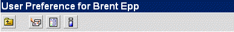

| A Barra de Ferramentas das Preferências pode ser vista em Preferências do Usuario.
A Barra de Ferramentas das Preferências:

Referências dos ícones:
| Ícone |
Nome/Texto |
Ação |
 | Voltar | Volta para a Caixa que o usuário estava |
 | Editar Endereços de E-mail Pessoal | Edita as informações do endereço do e-mail |
 | Ver Histórico | Mostra o histórico da sua atividade no Open Webmail activity |
 | Sobre | Mostra informções sobre o Servidor Open Webmail |
Para mais informações das preferências veja
Configurando Suas Preferências
. |